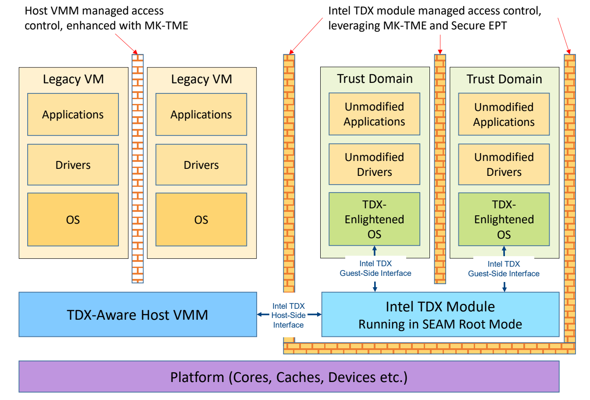
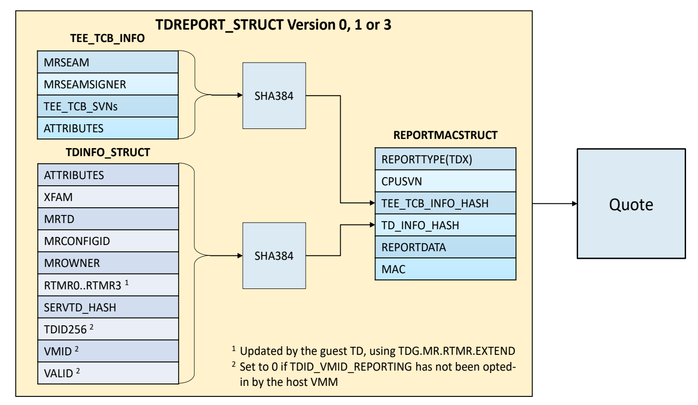
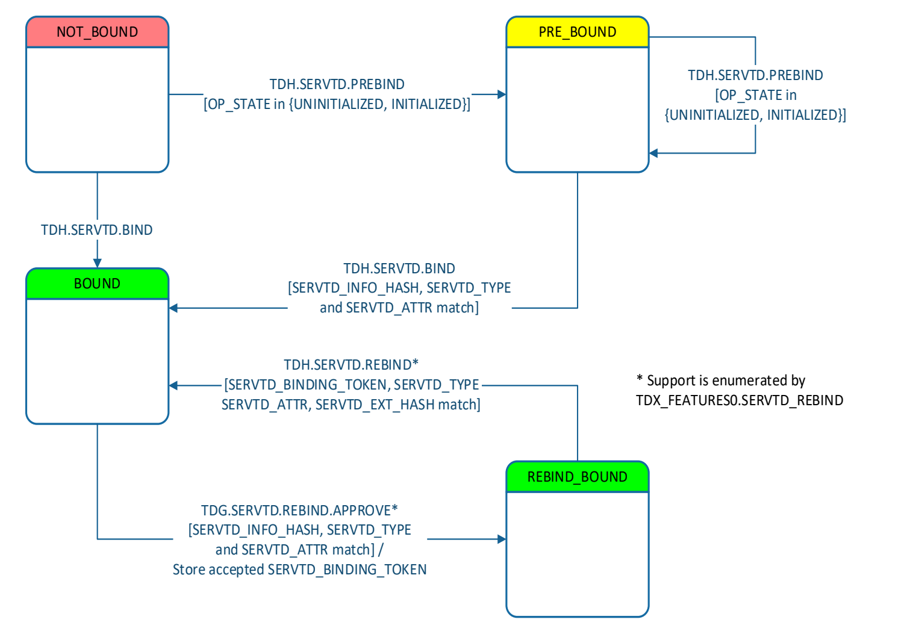
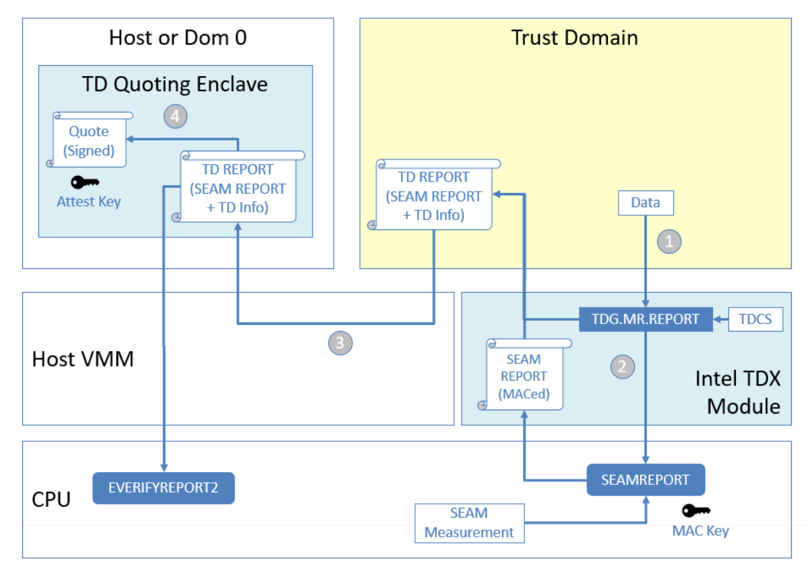
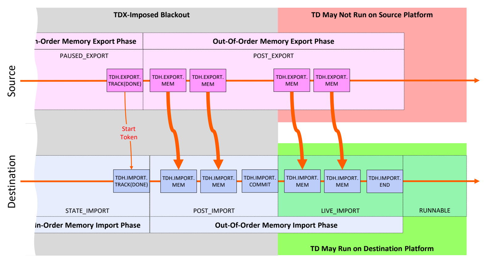

核对 Xeon 具体 SKU
宿主 TDX 支持始于部分第 4 代 Intel Xeon Scalable 处理器，并延续到部分更新的服务器平台；仅凭代际不能确定支持。
跟随 SEAM 中的 TDX 模块、私有内存地址转换，以及宿主 VMM 与 Guest Trust Domain 各自发出的调用。
支持 TDX 的 VMM 提供资源并调度 vCPU。Intel TDX 模块运行在 SEAM root，借助 CPU 虚拟化、受保护的内存映射和私有 KeyID 执行 TD 隔离。

分别确认具体处理器、固件设置、TDX 模块、宿主 KVM 与 Guest 能力。
宿主 TDX 支持始于部分第 4 代 Intel Xeon Scalable 处理器，并延续到部分更新的服务器平台；仅凭代际不能确定支持。
BIOS/UEFI 需要启用 TDX，配置 SEAM、SEAMRR 与私有 KeyID。宿主创建 TD 前须加载兼容的 Intel TDX 模块。
Linux 宿主须初始化 TDX；KVM 与 VMM 再提供用户态创建虚拟机的路径。功能还取决于内核及模块 ABI 版本。
TD Guest 处理私有/共享内存转换，在需要时接受页面，并以 TDCALL 请求模块服务或宿主协助。
先看 Intel 的 TDX 处理器支持说明和 Linux TDX 宿主指南。

NP-SEAMLDR 是经认证的代码模块（ACM）。它安装常驻的 P-SEAMLDR，后者通过 SEAMCALL 接收 SEAMLDR.INSTALL，核验已签名的模块信息，对加载的镜像做度量，并记录用于证明的模块身份。这份度量对应平台上的 TDX 模块。

宿主先调用 TDH.SYS.INIT 做全局初始化，再对每个逻辑处理器调用 TDH.SYS.LP.INIT，用 TDH.SYS.CONFIG 配置 TDMR 和 PAMT，并在每个处理器封装上配置模块全局密钥。TDH.SYS.TDMR.INIT 初始化相应的 PAMT 区域后，内存才可用于 TD 私有页。
SEAM、KeyID、Secure EPT 和 PAMT 协同工作；共享页是明确的例外。
宿主不能直接获得私有明文
Guest 校验跨边界数据

从 leaf 名称即可看出请求来自哪一方，以及需要哪种状态转换。
| 调用者 / 指令 | Leaf 或操作 | 在路径中的作用 |
|---|---|---|
宿主 VMM · SEAMCALL | TDH.MNG.CREATE | 创建 TD 根控制结构 TDR。 |
宿主 VMM · SEAMCALL | TDH.MNG.INIT | 初始化 TD 级配置。 |
宿主 VMM · SEAMCALL | TDH.MEM.PAGE.ADD | 为 TD 增加初始私有页面。 |
宿主 VMM · SEAMCALL | TDH.VP.ENTER | 进入或恢复 TD 虚拟处理器。 |
Guest TD · TDCALL | TDG.VP.INFO | 查询 TD 与虚拟处理器信息。 |
Guest TD · TDCALL | TDG.MEM.PAGE.ACCEPT | 使用前接受待确认的私有页。 |
Guest TD · TDCALL | TDG.VP.VMCALL | 请求宿主 VMM 服务，常称 TDVMCALL。 |
Guest TD · TDCALL | TDG.MR.REPORT | 生成供后续 Quote 流程使用的本地 TD 报告。 |
SEAMCALL 和 TDCALL 是 CPU 指令；TDH.* 与 TDG.* 是 TDX 模块 API 的 leaf。TDVMCALL 是 TDG.VP.VMCALL leaf，不是第三条指令。操作数、状态码和版本差异请查 Intel TDX 模块 ABI 规范。

把用户态 KVM 接口、模块 ABI 和 Guest 接口视为三个不同层次。
Linux KVM TDX 指南记录用户态 ioctl 层，它与 SEAMCALL ABI 不是同一层。
| 字段 | 含义 |
|---|---|
MRSEAM | TEE_TCB_INFO 中已加载的 TDX 模块身份度量。 |
MRTD | 记录初始 TD 布局和显式纳入度量的内容。 |
RTMR[0..3] | 四个 SHA-384 寄存器，Guest 可通过 TDG.MR.RTMR.EXTEND 扩展。固件和 Guest 软件可度量启动事件，并记录事件日志供验证者重算。 |
REPORTDATA | Guest 请求报告时提供的 64 字节。证明协议可用它将挑战值和 Guest 公钥绑定到证据。 |

放置秘密或信任虚拟设备前，先读懂私有/共享边界。
CPU、模块和内存元数据阻止宿主直接访问私有 Guest 页面及 TD 状态。宿主仍控制调度，并提供虚拟设备。
Guest 共享页、模拟 I/O 与 VMM 响应都是不可信输入。TDX 本身不保证可用性，也不会消除时序和微架构侧信道。
基础 TDX 保护虚拟机的私有 CPU 状态与内存。普通 I/O 常通过共享缓冲区中转，软件按需复制或加密敏感数据。TDX Connect 将 TD 的信任边界扩展到明确接受的 PCIe 设备功能，使其能直接访问获准的私有缓冲区。

| 层次 | 解决什么问题 | 在哪里执行 |
|---|---|---|
| PCIe DOE | Data Object Exchange 为控制消息提供邮箱。 | 位于 PCIe 配置空间。VMM 可转发邮箱消息。 |
| DMTF SPDM | 认证设备身份、获取度量，并建立管理消息的安全会话。 | 会话端点是 TEE 安全管理器（TSM）和设备安全管理器（DSM）。 |
| PCI-SIG TDISP | 锁定、查询、启动和停止单个 TEE 设备接口（TDI）。 | TSM 和 DSM 在 SPDM 安全会话内交换 TDISP 消息。 |
| PCIe IDE / IDE_KM | Selective IDE 保护 PCIe 事务包的机密性和完整性，并防止重放。IDE_KM 配置流密钥。 | IDE 保护根端口与设备端点之间的流量。IDE_KM 消息通过 SPDM 会话传输。 |
| Intel VT-d / IOMMU | 转换可信 DMA 地址，并将访问限制在该 TDI 获准访问的页面。 | TDX 模块控制可信映射。宿主管理普通共享 I/O 映射。 |
LOCK_INTERFACE_REQUEST 锁定与安全相关的配置。GET_DEVICE_INTERFACE_REPORT 获取锁定后的接口配置，包括 MMIO 范围。TD 按自己的策略检查接口报告和 SPDM 证据。START_INTERFACE_REQUEST 使接口进入 RUN。设备可 DMA 到获准的 TD 私有页，TD 可通过可信 MMIO 访问分配给它的设备寄存器。STOP_INTERFACE_REQUEST 让接口停止工作并处理在途事务。平台撤销可信 MMIO 和 DMA 访问，并使缓存的 I/O 地址转换失效，再回收资源。支持 SR-IOV 的设备可以提供多个虚拟功能（VF）。同一时刻，一个已分配的 TDI 只属于一个 TD。TD 接受自己的 VF 后，可通过 MMIO 提交任务，由 VF 对获准的私有缓冲区执行 DMA。设备固件与功能之间的隔离由此进入 TD 的安全边界。
逐项核对服务器 SKU 与固件、根端口与可信 VT-d、TDX 模块、宿主内核与 VMM、Guest 驱动，以及设备端是否支持 DOE、SPDM、Selective IDE 和 TDISP。VMM 仍可拒绝分配或撤下设备，设备可用性由宿主控制。
Intel 将 TEE I/O 列为 TDX 2.0 扩展。2026 年 9 月发布的 Connect ABI（2.1 V0.66）是社区评审稿。在该稿中，VMM 通过 SEAMCALL 调用 TDH.TDI.BIND，Guest 通过 TDCALL 使用 TDG.TDI.RD 读取证据摘要，再用 TDG.TDI.START 授权同一次绑定。GHCI 2.0 描述 Guest 与 VMM 的消息接口。接口随版本演进，部署时以目标平台 ABI 为准。
PCI-SIG 还为 PCIe 6.3 发布了 Extended TEE（XT）ECN，增加了与 IDE 和地址转换服务（ATS）相关的规则。XT 支持需要在基础 TDISP 支持之外单独核对。
Service TD 是独立运行的 Trust Domain。它与目标 TD 的绑定关系由模块执行。当前基础架构规范描述的服务类型是 Migration TD（MigTD）。

TDH.SERVTD.PREBIND 在目标 TD 的 TDCS 绑定槽中登记预期的服务度量、类型和属性，随后再绑定服务实例。TDH.SERVTD.BIND 检查适用的绑定参数并返回句柄。目标 TD 的 SERVTD_HASH 将服务绑定配置纳入证明。TDG.SERVTD.RD 或 TDG.SERVTD.WR 时检查服务实例和绑定类型。授权范围是目标 TD 的特定元数据字段。本地报告将 TD 度量与 Guest 提供的数据绑定。Quote 生成组件将它转换为可由远端验证者认证和评估的证据。

| 阶段 | 参与者与安全检查 |
|---|---|
| 挑战与报告 | 证明方按协议将挑战值或挑战值与公钥的摘要放入 REPORTDATA，调用 TDG.MR.REPORT。模块返回带有硬件支持 MAC 的本地 TDREPORT。 |
| 生成 Quote | 在图中的 DCAP 路径里，Guest 将报告交给宿主 Quote Generation Service（QGS）。本机 TD Quoting Enclave（TDQE）校验报告后生成 ECDSA 签名的 Quote。Guest 与宿主之间的传输方式取决于实现。 |
| 远程验证 | 验证者使用 Intel 的 PCK 证书、撤销列表、TCB Info、QE Identity 等材料验证 Quote 签名及认证链，通过 REPORTDATA 检查新鲜度及公钥绑定，再按自己的策略评估模块 TCB、TD 度量及属性。 |
Intel 也描述了由 Security Engine 支持的证明及 Quoting TD 模型。可用的 Quote 生成路径和证据格式由具体平台与部署决定。
MigTD 负责信任策略与密钥交换，源端和目的端的模块在导出和导入时保护私有状态，宿主 VMM 负责会话编排与迁移数据包传输。

TDH.EXPORT.* 和 TDH.IMPORT.* 处理元数据与内存。热迁移可在源端运行时导出内存。暂停后，模块导出最终非内存状态，并在有序阶段结束时发出启动令牌。TDH.IMPORT.COMMIT 可在剩余内存全部到达前允许目的端运行。会话状态和令牌约束两端各自何时可运行，以及中止时能否回到源端。
